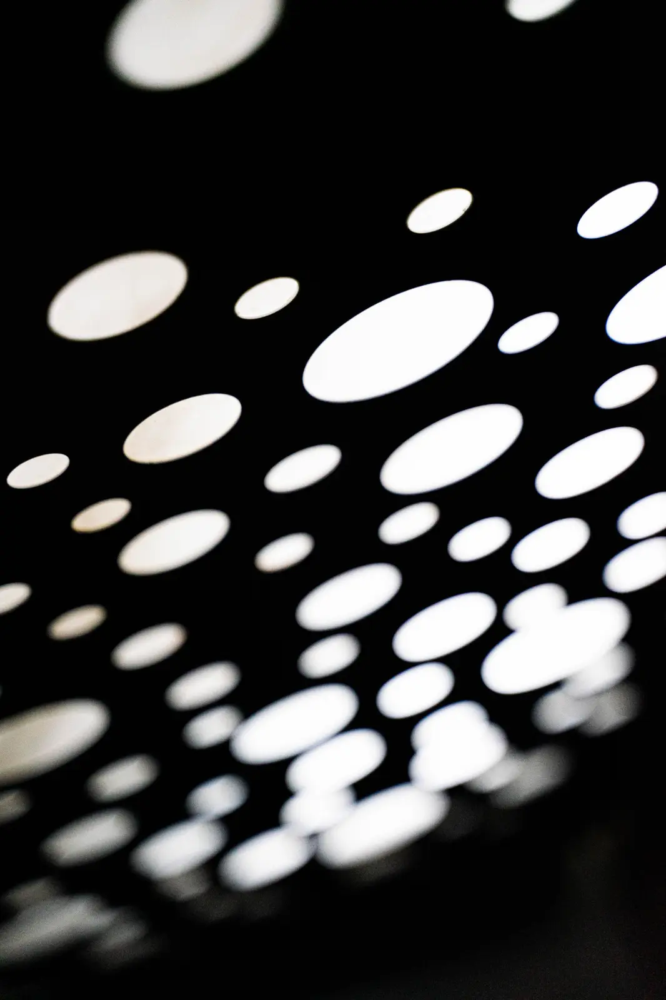

LumosPerfora Faux Metal.
Developed in-house.
A lightweight perforated fabric system developed in-house by Baganti to reproduce the appearance of perforated metal. Available in widths up to 10 feet, with custom patterns and optional backlighting. Cost savings depend on the project.
View product details
Lightweight fabric. Fewer joints.
Fabric widths up to 10 feet cover large areas with fewer joints. Patterns, graphics and colours can be developed from your artwork. We review pattern scale, viewing distance and production feasibility before confirming the design.
- Format
- Tensioned perforated fabric
- Coverage
- Up to 10 ft seamless width
- Pattern
- Collection patterns or custom artwork
- Mounting
- Surface, suspended or recessed
Product documents + tools.
Specification, installation and lighting information for LumosPerfora Faux Metal.
View all product resourcesFaux Metal Specification Package
Surface, pattern, sizing, mounting and lighting information.
Installation Documentation
Installation information prepared for the selected Faux Metal configuration.
Integrated Backlighting
Review the Lumosanti system used when Faux Metal includes light.
Technical Support
Review pattern scale, mounting, lighting and project coordination.
Plan the surface,
pattern and scale.
Share your drawings, dimensions, application or idea. We’ll review the requirements and recommend a product configuration.